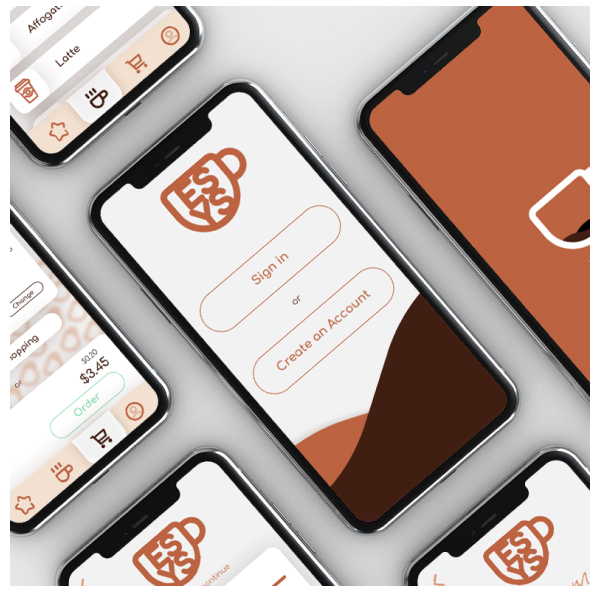

Espressyoself Project
I created a Figma App that demonstrates several states during it's user flow,
including default state, error state, success state, etc.
Exploring states was exciting since we all experience them but not all of us
acknowledge their exisitence. I also learned a lot about Figma animations.
View Figma App Design